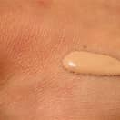
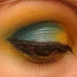
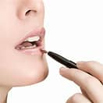
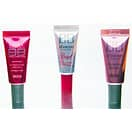

Base de maquillaje
La base de maquillaje es un producto que ayuda a que la piel luzca un mejor aspecto, de igual manera puede ayudar a disminuir la apariencia de algunas imperfecciones. Este producto puede ser elaborado a base de químicos, aceites, entre otras cosas. Al momento de ser aplicada sobre el rostro, el tono de piel se verá unificado, cubrirá las manchas obtenidas por el sol y otras afecciones y dará una impresión mate en la piel.

Delineador de ojos
El delineador de ojos, o simplemente delineador o delimitado, a veces denominado por el anglicismo eyeliner o eye liner, es un cosmético y maquillaje utilizado para definir el contorno de los ojos.[1] Se aplica alrededor del mismo para crear una variedad de ilusiones estéticas.[1] Este es utilizado tanto por hombres como por mujeres.

Brillo de labios
El brillo de labios, más conocido como brillo labial, es un producto cosmético utilizado principalmente para resaltar los labios con un toque de brillantez y color.
Este producto se ofrece como viscoso o semiblando (no confundir con bálsamo de labios, con fines generalmente médicos). Puede ser traslúcido (los brillos de labios de tonalidades claras pueden superponerse sobre una capa normal de lápiz labial para iluminarlos más) o de una variada tonalidades opacas, como también emulando distintos efectos como el hielo, destellos de luz o metal. También existe una variedad de colores rosas, púrpura, marrón, rojo, verde y tintes azulados.

BB Cream
BB cream es un término de mercadotecnia en inglés que se refiere al bálsamo para las manchas, base para las manchas y, en los mercados occidentales, bálsamo de belleza. Los productos comercializados como BB creams suelen estar diseñados para servir de base de maquillaje, crema hidratante y protector solar a la vez.
El término comercial CC cream se inventó más tarde y a veces significa 'crema de corrección del color'. Los productos comercializados como CC creams afirman cumplir la misma función que las BB creams, con mayor énfasis en la homogeneización del color de la piel.[1] Las diferencias entre las cremas BB y las CC varían de una marca a otra.